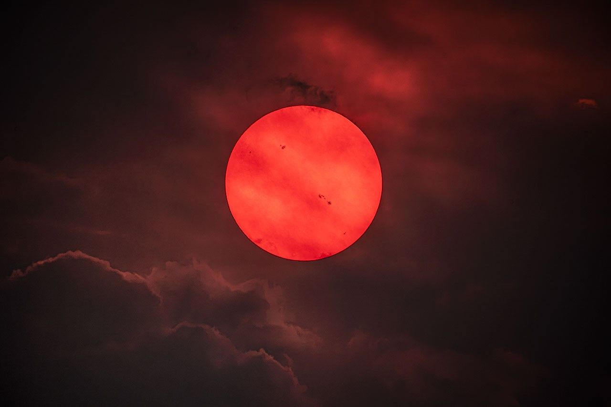
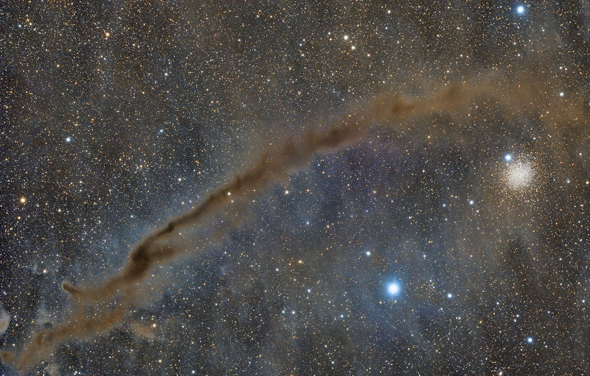

Preparações para caminhadas espaciais, bioimpressão e pesquisa de exercícios Cronograma da estação superior
A Expedição 75 está se preparando para um agosto agitado com três caminhadas espaciais planejadas na Estação Espacial Internacional. Os residentes orbitais também estão imprimindo células e tecidos vivos e estudando como aumentar a eficácia do exercício no espaço.

APOD: 30 de julho de 2026 – Sol vermelho através da fumaça do incêndio florestal
APOD Science APOD APOD: 2026 30 de julho – Red Sun... Arquivo APOD de Hoje Índice de Envios Pesquisar Calendário RSS Educação Sobre Discutir APOD Astronomia Imagem do Dia Descubra o cosmos! Todos os dias uma imagem ou fotografia diferente do nosso...

APOD: 31 de julho de 2026 – NGC 4372 e o Dark Doodad
APOD Science APOD APOD: 2026 31 de julho – NGC... Arquivo APOD de Hoje Índice de Envios Calendário de Pesquisa RSS Educação Sobre Discutir APOD Astronomia Imagem do Dia Descubra o cosmos! Todos os dias uma imagem ou fotografia diferente do nosso fascinante...